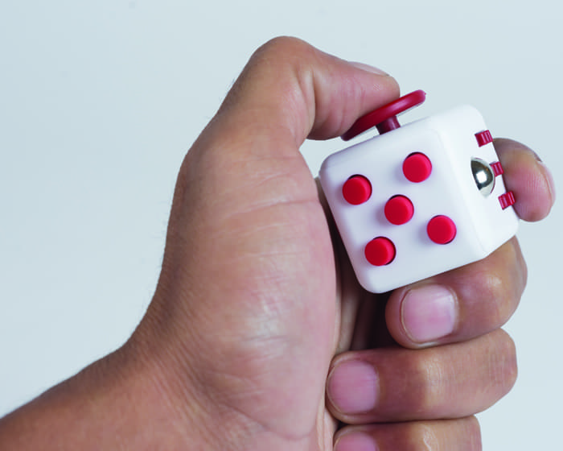

--Introducción--
Para este primer proyecto, se tuvo que hacer un diseño en 3D con unas dimesiones específicas (5x5x5 cm), el cual tuviera movimiento de algún tipo. El profesor dio a los alumnos libertad creativa, por lo que practicamente se podía crear lo que sea, solamente se estaba limitado por tus propias habilidades.
En mi caso particular decidí hacer un cubo hueco, el cual conteniera una esfera de la que se desprendía un joystich que se podía mover. Me decante por un diseño de este tipo debido a mi constante ansiedad y necesidad de calmarme con objetos "antiestrés", es por eso que este cubo asimila a los llamados cubos antiestrés. A continuación se muestra una imagen de un cubo antiestrés:
--Diseño--
Primero se tuvo que moderlar la pieza en Tinkercad. Los pasos fueron los siguientes:
- Se inserta el cubo.
- Se inserta una esfera dentro del cubo.
- Se borra el área que ocupa la esfera para dejar hueco el cubo.
- Se vuelve a insertar la esfera dentro del cubo (esta será la que se mueva). Dicha esfera tiene que estar despegada del piso.
- Se coloca el joystich sobre la esfera para obtener una mejor movilidad.
Al final de todo el proceso, el diseño del objeto quedo así:
--Impresión--
Tras hacer el diseño se tuvo que reservar la impresora 3D para hacer la impresión. El proceso fue largo, ya que la impresión se llevo a cabo durante 1 hora y media. Tras esperar el tiempo indicado, la figura fue retirada de la impresora. Antes de poder usarla se le tuvo que quitar los soportes (los cuales fueron asignados automáticamente por el programa de la impresora, dichos soportes sirven para sostener la esfera, ya que esta esta "volando").
Después de retirar los soportes se comprueba que la esfera se pueda mover como se desea.
Afortunadamente la esfera funciona como se desea y no hubo muchos problemas a la hora de imprimir en 3D, contando como el mayor de estos el tiempo, pues era limitado.

--Comentarios Finales--
El proyecto estuvo muy interesante, sobre todo porque siempre había querido hacer una impresión en 3D. Al final me gusto el resultado final (aunque hacer el disñeo fue muy complicado, pues nunca había usado Tinkercad) y el cubo me ha servido mucho últimamente para desestresarme 🧠🧊💻